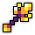
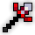

BiS Items & Swapouts:
Main Set:
 -
-
 (any DPS ring with a good amount of attack)
(any DPS ring with a good amount of attack)
Swapouts:
 (+15 atk)
(+15 atk)
BiS Enchants:
- : Flurry of Blows - Attack to Dexterity IV - Attack Tradeoff IV - Onshoot Attack IV
- : Overwhelming Strikes - Attack to Dexterity IV - Attack Tradeoff IV - Onshoot Attack IV
- : Shaitan’s Might - Attack Tradeoff IV - Percent Mana Regen IV - Onability Dexterity IV
-
 : Attack to Dexterity IV - Attack Tradeoff IV - Onhit Attack IV
: Attack to Dexterity IV - Attack Tradeoff IV - Onhit Attack IV
-
 : Attack to Dexterity IV - Attack Tradeoff IV - Onhit Dexterity IV - Onability Attack IV
: Attack to Dexterity IV - Attack Tradeoff IV - Onhit Dexterity IV - Onability Attack IV
For Attack Tradeoff enchants, avoid getting -dexterity.